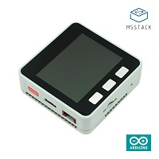
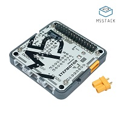

Get Started¶
This document is intended to help users set up the software environment for development of applications. Through a simple example we would like to illustrate how to develop M5Stack boards, firmware(Arduino IDE) or source files(Micropython) download to M5Stack boards.
Introduction¶
What You Need¶
To develop applications for M5Stack Core you need:
- PC loaded with either Windows, Linux or Mac operating system
- a M5Stack Core with Type-C cable
Your boards¶
If you have one of ESP32 development boards listed below, click the corresponding one to start your development.
|  |  |
 |
| Core with Arduino | Core with Micropython | M5GO |
 |
 |  |
| ESP32CAM | M5Stack STEPMOTOR Module | M5Bala |